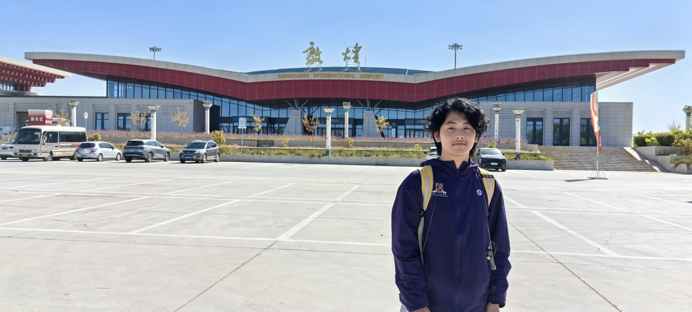
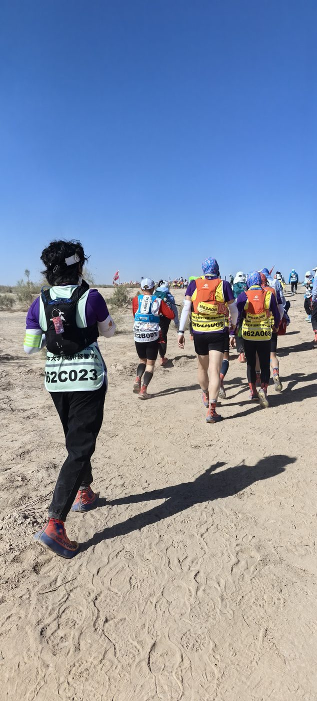
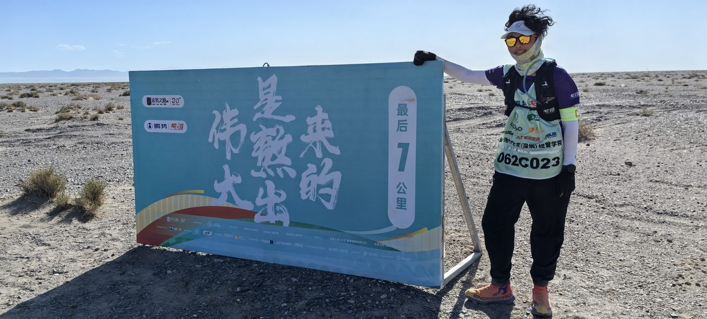
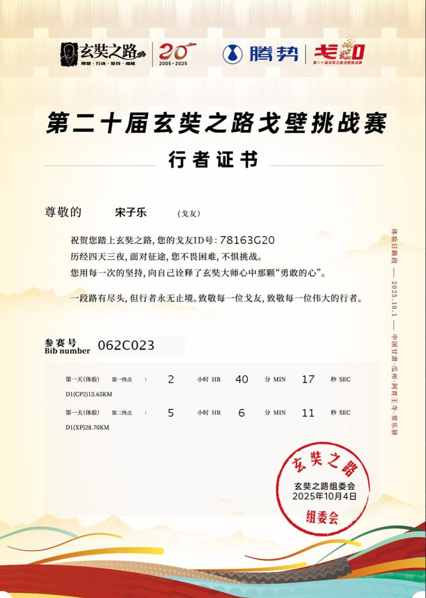

September 29th, Dunhuang. The sky was so high it made me uneasy. No shade in the airport square, dry wind, sun falling straight down. I took a photo under the two giant characters reading "Dunhuang," my pack stuffed with trail shoes, a hydration vest, and a shameful number of energy gels. I had come for 28.7 kilometers. Back then, the Gobi was still just a noun to me — a place name printed on a registration page.

The day before the race, the Wonderful Life Expo. A huge backdrop read "Forever Young," crowded with sponsor logos, runners lining up for photos. Twenty editions now — this road has been walked since 2005, the faces changing year after year, the wall the same wall, the road the same road. I posed too, smiling easily, not yet knowing what tomorrow held.
The next day, the Gobi was truly boundless.
The salt flats glared white, camel thorn crouched in clumps, the horizon trembled in the heat. At the start we were a great, noisy procession of colorful bibs; then the field stretched and broke apart — no leaders ahead, no sweepers behind, only footsteps and breathing between earth and sky. I hit the first checkpoint at 15.65 km in 2:40:17, feeling fine. But the first thing the Gobi teaches you is this: the road is always longer than you think, and the sun always crueler.

When the final-kilometer sign appeared, I was negotiating with my own body. Eight characters stood on the board: ideals, action, perseverance, transcendence. One more kilometer is a single metro stop in the city; in the Gobi it is a long argument with yourself — walk, or keep running. A fellow runner I had never met settled it for me: "Walk it together. Don't stop."

28.70 kilometers. 5 hours, 6 minutes, 11 seconds. The finisher's certificate reads: "Every road has an end, but the walker has none."
On the bus back, a whole vehicle of us slept slumped sideways, faces tanned to the same shade. Someone was already recruiting for next year. Watching the wasteland slide backwards past the window, I finally understood the words that have circulated on this road for twenty years:
Cross the boundless Gobi, and everyone is your brother and sister.
Bib 062C023. I came, I walked, I did not stop.
